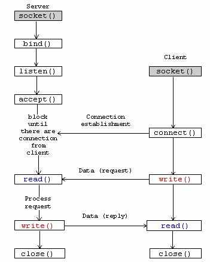
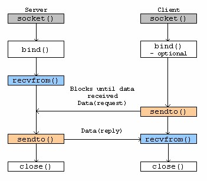

語言中的 Socket 是在寫網路程式必會碰到的東西，而它牽涉較多參數與函式，不如 python 簡潔，本篇用於紀錄關於網路程式中 socket 相關的細節
0x01 Berkeley Socket
- Berkeley Socket 又稱 BSD Socket，是介於 Transport Layer 與 Application Layer 間的 API，用於行程間通訊 (UNIX Socket) 和網路通訊 (Network Socket)

- Connection-oriented socket (TCP)
)
- Connectionless socket (UDP)
)
0x02 通訊端 API 函式
**socket()**根據指定的 socket type 建立一個新的 socket，為 socket 分配系統資源，並回傳一個 file descriptor**bind()**一般用於 server 端，用來將一個 socket file descriptor 和一個 sockaddr structure 相關聯，sockaddr 結構中會指出這個 socket (sockfd) 所要監聽的 address, port number 等資訊**listen()**用於 server 端，使一個 socket (sockfd) 進入監聽狀態**connect()**用於 client 端，他會透過 sockfd 和 sockaddr structure 向指定的 server 進行直接通訊，如果是連線導向的協定，如 TCP，則 connect function 會先建立起連線**accept()**用於 server 端，接受一個從 remote client 來的 TCP 連線請求，和 remote client 建立 TCP 連線並將建立的 socket 關連到 sockfd 與 sockaddr**send()**、**recv()**、**write()**、**read()**、**recvfrom()**、**sendto()**用於傳送與接收資料**close()**呼叫系統關閉分配的 sockfd，如果是 TCP 則連線會中斷**gethostbyname()**、**gethostbyaddr()**用來解析 hostname 和 address，IPv4 only
socket()
#include <sys/types.h>
#include <sys/socket.h>
int socket(int domain, int type, int protocol);
/* return a file descriptor for the new socket on success, or -1 if error */
建立一個 communication endpoint，並回傳一個 file descriptor
- domain 為通訊端的協定集
- AF_INET 表示 IPv4 網路協定
- AF_INET6 表示 IPv6 網路協定
- AF_UNIX 表示本地端通訊協定
- type
- SOCK_STREAM 提供雙向, 可靠的, 連線導向的串流連線 (TCP)
- SOCK_DGRAM 提供非連線導向的 datagrams 類型 (UDP)
- SOCK_SEQPACKET 提供雙向, 可靠的, 連線導向的 packet 類型
- SOCK_RAW 在 Network Layer 上的原始網路協議
- protocol 指定實際使用的傳輸協定，在 <netinet/in.h> 有詳細說明。 最常見的就是
- IPPROTO_TCP
- IPPROTO_SCTP
- IPPROTO_UDP
- IPPROTO_DCCP
- 可以使用 0，即根據選定的domain和type選擇使用預設協定
bind()
#include <sys/socket.h>
int bind(int sockfd, const struct sockaddr *address, socklen_t address_len);
/* return 0 for successful; otherwise, -1 if error */
include <netinet/in.h>
struct sockaddr {
unsigned short sa_family; // 2 bytes address family, AF_xxx
char sa_data[14]; // 14 bytes of protocol address
};
// IPv4 AF_INET sockets:
struct sockaddr_in {
short sin_family; // 2 bytes e.g. AF_INET, AF_INET6
unsigned short sin_port; // 2 bytes e.g. htons(3490)
struct in_addr sin_addr; // 4 bytes see struct in_addr, below
char sin_zero[8]; // 8 bytes zero this if you want to
};
struct in_addr {
unsigned long s_addr; // 4 bytes load with inet_pton()
};
用於 server 端，用來將一個 socket file descriptor 和一個 sockaddr structure 相關聯，sockaddr 結構中會指出這個 socket (sockfd) 所要監聽的 address, port number 等資訊
- sockfd 為上面 socket() 回傳的 file descriptor
- address 是一個 sockaddr 結構，包含了這個 socket 所要使用的一些資訊
- sockaddr 和 sockaddr_in 結構類似，sockaddr_in 將 sockaddr 中的 char sa_data[14]; ，長度 14 bytes 轉為三個變數，一般寫成是我們使用 sockaddr_in 對其中的變數賦值，再將其轉型為 sockaddr
- s_addr 是用 unsigned long int 所表示的 host address number
- INADDR_LOOPBACK: 指本機的 address，也就是 127.0.0.1 (localhost)
- INADDR_ANY: 指任何連上來的 address。如果要接受所有來自 internet 的 connection 可使用
- INADDR_BROADCAST: 傳送 broadcast 訊息可使用
- INADDR_NONE: 某些 function 錯誤時的回傳值
- address_len 用來指出 sockaddr 結構長度
listen()
#include <sys/socket.h>
int listen(int sockfd, int backlog);
/* return 0 if success, otherwise, -1 for error */
- sockfd 依然是上面的 socket file descriptor
- backlog 指定監聽佇列大小，當有連線請求到來會進入此監聽佇列，連線請求被 accept() 後會離開監聽佇列，當佇列滿時，新的連線請求會返回錯誤
accept()
#include <sys/socket.h>
int accept(int sockfd, struct sockaddr *restrict address, socklen_t *restrict address_len);
/* return the non-negative file descriptor of the accepted socket if success, Otherwise, -1 if error */
接受一個監聽佇列中的連線，回傳指向 client 的 file descriptor
- sockfd 依然是上面的 socket file descriptor
- address 與上面 sockaddr 不同一個，自己宣告另一個指向 sockaddr structure 的變數用來記錄 client 的 socket 相關資訊，如不需要可以給 NULL
- address_len 用來指出 sockaddr 結構長度，如果前面第二參數給 NULL ，則這邊也給 NULL
connect()
#include <sys/socket.h>
int connect(int sockfd, const struct sockaddr *address, socklen_t address_len);
/* return 0 if success, otherwise, -1 for error */
用於 client 端，他會透過 sockfd 和 sockaddr structure 向指定的 server 連線
- sockfd client 一樣要呼叫 socket() 從回傳值取得
- address 是一個 sockaddr 結構，包含了這個 socket 所要使用的一些資訊
- address_len 用來指出 sockaddr 結構長度
0x03 Example code
/* Server code in C */
#include <sys/types.h>
#include <sys/socket.h>
#include <netinet/in.h>
#include <arpa/inet.h>
#include <stdio.h>
#include <stdlib.h>
#include <string.h>
#include <unistd.h>
int main(void)
{
struct sockaddr_in stSockAddr;
int SocketFD = socket(PF_INET, SOCK_STREAM, IPPROTO_TCP);
if(-1 == SocketFD)
{
perror("can not create socket");
exit(EXIT_FAILURE);
}
memset(&stSockAddr, 0, sizeof(struct sockaddr_in));
stSockAddr.sin_family = AF_INET;
stSockAddr.sin_port = htons(1100);
stSockAddr.sin_addr.s_addr = INADDR_ANY;
if(-1 == bind(SocketFD,(const struct sockaddr *)&stSockAddr, sizeof(struct sockaddr_in)))
{
perror("error bind failed");
close(SocketFD);
exit(EXIT_FAILURE);
}
if(-1 == listen(SocketFD, 10))
{
perror("error listen failed");
close(SocketFD);
exit(EXIT_FAILURE);
}
for(;;)
{
int ConnectFD = accept(SocketFD, NULL, NULL);
if(0 > ConnectFD)
{
perror("error accept failed");
close(SocketFD);
exit(EXIT_FAILURE);
}
/* perform read write operations ... */
shutdown(ConnectFD, SHUT_RDWR);
close(ConnectFD);
}
close(SocketFD);
return 0;
}
/* Client code in C */
#include <sys/types.h>
#include <sys/socket.h>
#include <netinet/in.h>
#include <arpa/inet.h>
#include <stdio.h>
#include <stdlib.h>
#include <string.h>
#include <unistd.h>
int main(void)
{
struct sockaddr_in stSockAddr;
int Res;
int SocketFD = socket(PF_INET, SOCK_STREAM, IPPROTO_TCP);
if (-1 == SocketFD)
{
perror("cannot create socket");
exit(EXIT_FAILURE);
}
memset(&stSockAddr, 0, sizeof(struct sockaddr_in));
stSockAddr.sin_family = AF_INET;
stSockAddr.sin_port = htons(1100);
Res = inet_pton(AF_INET, "192.168.1.3", &stSockAddr.sin_addr);
if (0 > Res)
{
perror("error: first parameter is not a valid address family");
close(SocketFD);
exit(EXIT_FAILURE);
}
else if (0 == Res)
{
perror("char string (second parameter does not contain valid ipaddress");
close(SocketFD);
exit(EXIT_FAILURE);
}
if (-1 == connect(SocketFD, (const struct sockaddr *)&stSockAddr, sizeof(struct sockaddr_in)))
{
perror("connect failed");
close(SocketFD);
exit(EXIT_FAILURE);
}
/* perform read write operations ... */
shutdown(SocketFD, SHUT_RDWR);
close(SocketFD);
return 0;
}